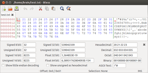

Bless
Dieser Artikel wurde für die folgenden Ubuntu-Versionen getestet:
Ubuntu 14.04 Trusty Tahr
Zum Verständnis dieses Artikels sind folgende Seiten hilfreich:
 Bless
Bless  ist ein in Mono/Gtk+ geschriebener, umfangreicher Hex-Editor für GNU/Linux-Systeme. Allerdings sollte er auch auf anderen System laufen, die Unterstützung für Mono und GTK bieten.
ist ein in Mono/Gtk+ geschriebener, umfangreicher Hex-Editor für GNU/Linux-Systeme. Allerdings sollte er auch auf anderen System laufen, die Unterstützung für Mono und GTK bieten.
Das Programm bietet folgende Funktionen:
Effektiver Umgang mit großen Dateien
Rückgängig machen und Wiederherstellen in mehreren Schritten
Anpassbare Ansichten 
Schnelle Bildschirmanzeige
Mittels Tabs lassen sich mehrere Dateien gleichzeitig öffnen
Suchen und Ersetzen
Konvertierungstabelle unterschiedlicher Variablen
Umfangreiche Dokumentation
Das Programm gibt es derzeit nur auf Englisch. Eine Alternative ist GHex, das über das Paket ghex installiert werden kann und keine Mono-Laufzeitumgebung voraussetzt.
Installation¶
Bless ist in den offiziellen Paketquellen enthalten. Man muss nur das folgende Paket installieren [1]:
bless (universe)
 mit apturl
mit apturl
Paketliste zum Kopieren:
sudo apt-get install bless
sudo aptitude install bless
Anschließend kann man das Programm bei Ubuntu-Varianten mit einem Anwendungsmenü über "Entwicklung -> Bless Hex Editor" gestartet werden [2].
Verwendung¶
Da ein Hex-Editor keine Dateistrukturen kennt und man damit quasi auf unterster Ebene direkt mit Bits und Bytes arbeitet, beschränkt sich der Einsatz normalerweise auf Sonderfälle wie beispielsweise die Rettung von Inhalten defekter Dateien. Wer als Einsteiger das Gefühl für den Umgang mit einem Hex-Editor bekommen möchte, kopiert den folgenden Beispieltext:
!"#$%&'()*+,-./0123456789:;<=>?
@ABCDEFGHIJKLMNOPQRSTUVWXYZ[\]^_
`abcdefghijklmnopqrstuvwxyz{|}~in eine neue Datei mit der Endung .txt und öffnet diese anschließend mit Bless.
Während der ursprüngliche Text rechts angezeigt wird, enthält die linke Ansicht die ASCII-Codes der Buchstaben in ihrer hexadezimalen Schreibweise. Ein Zeilenumbruch wird im Hex-Modus nicht angezeigt. An seine Stelle tritt der Wagenrücklauf (dezimal: 13, hexadezimal: 0D). Wenn man nun beispielsweise einen Buchstaben ändern möchte, gibt man dementsprechend nicht den Buchstaben, sondern den ASCII-Code in der Hex-Notierung ein.
Seine Stärken spielt ein Hex-Editor allerdings erst aus, wenn man z.B. ein Dokument im .doc-Format (MS Word) besitzt, das sich nicht mehr mit dem Ursprungsprogramm öffnen lässt. So kann man unter Umständen den eigentlichen Inhalt durch Kopieren und Einfügen zumindest bei Textdateien noch retten, wenn die Datei schon verloren zu sein scheint.
- Erstellt mit Inyoka
-
 2004 – 2017 ubuntuusers.de • Einige Rechte vorbehalten
2004 – 2017 ubuntuusers.de • Einige Rechte vorbehalten
Lizenz • Kontakt • Datenschutz • Impressum • Serverstatus -
Serverhousing gespendet von